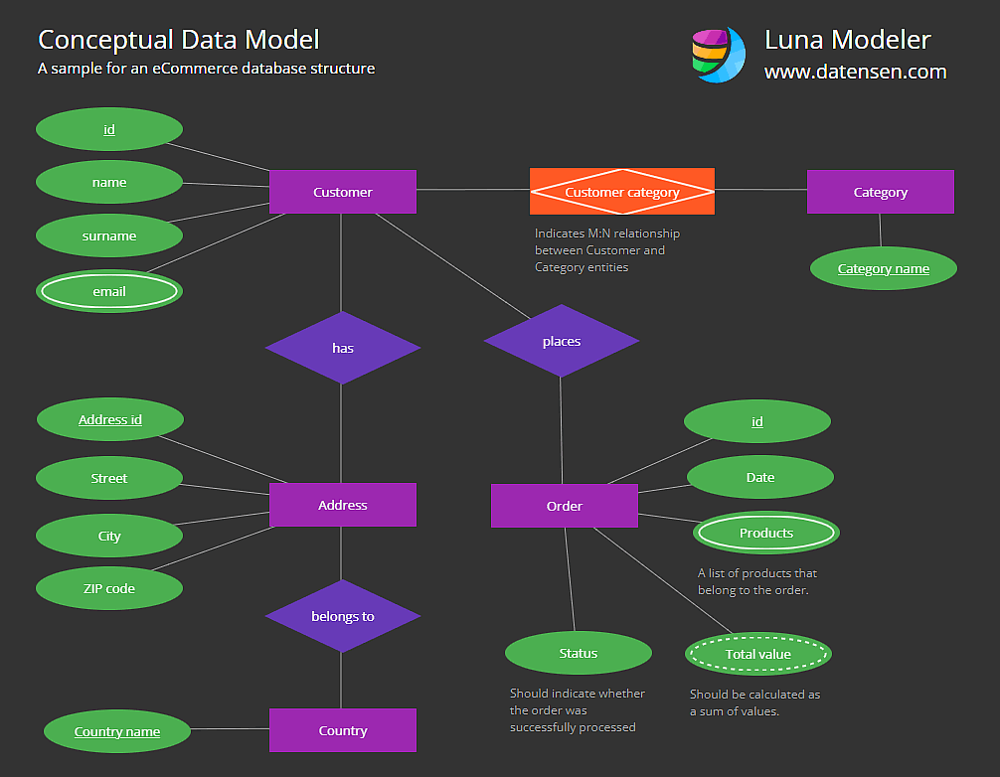
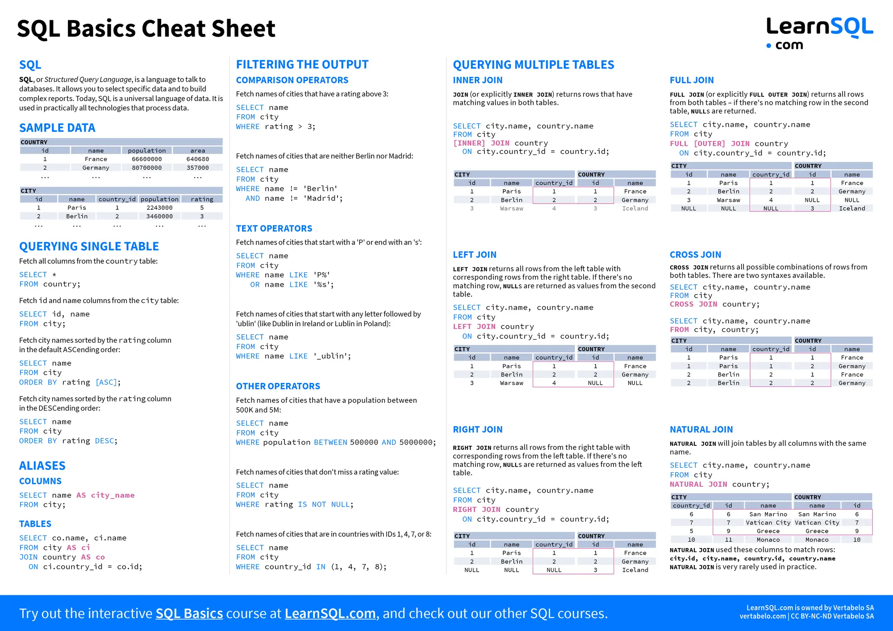

Clase 4: Introducción a SQL y Bases de Datos Relacionales#
En la ciencia de datos astrofísica, la información rara vez vive en un solo archivo CSV. Los datos reales son masivos, complejos y están interconectados. En esta semana aprenderemos a diseñar, crear, consultar y graficar Bases de Datos Relacionales usando SQL (Structured Query Language) y Python.
1. El Concepto Relacional, SQL y SQLite#
Una Base de Datos Relacional es un sistema que almacena información dividiéndola en múltiples tablas temáticas interconectadas para evitar la redundancia (repetición) de los datos.
SQL es el lenguaje universal diseñado para “hablar” con estas bases de datos. Por otro lado, SQLite es un motor de base de datos específico, ultra-ligero, que guarda toda esta arquitectura relacional en un único archivo local (ej. datos.db), sin necesidad de configurar servidores pesados.
Anatomía de una Base de Datos Relacional#
Tabla (Table): Una colección de datos sobre una sola entidad (ej.
Estrellas,Planetas).Columnas y Filas: Las columnas definen los atributos (Masa, Radio) y las filas los registros individuales.
Clave Primaria (Primary Key - PK): Un identificador único e irrepetible para cada fila (ej.
ID_Estrella).Clave Foránea (Foreign Key - FK): Una columna que hace referencia a la Clave Primaria de otra tabla, creando la “relación” o puente entre ambas.
Ejemplo Sencillo:
Tenemos una tabla Estrellas (PK: id_estrella) y una tabla Planetas (PK: id_planeta). Para saber a qué estrella orbita un planeta, la tabla Planetas tendrá una columna llamada id_estrella_madre (FK) que apunta directamente al ID de la primera tabla.

Imagen tomada de: Link
2. Comandos Básicos de SQL (Diccionario Humano-Máquina)#
A continuación, explicamos los comandos fundamentales de SQL, ilustrados con ejemplos y su “traducción” exacta a lenguaje humano.
CREATE TABLE (Crear Tabla)#
Define la estructura de una nueva tabla y el tipo de dato de cada columna (INTEGER para enteros, REAL para decimales, TEXT para palabras).
CREATE TABLE galaxias (
id_galaxia INTEGER PRIMARY KEY,
nombre TEXT,
distancia_mpc REAL
);
Traducción: “Crea una plantilla llamada ‘galaxias’ con tres columnas. La primera será un número entero que no se puede repetir, la segunda guardará texto, y la tercera guardará números decimales.”
INSERT INTO (Insertar Datos)#
Agrega una nueva fila de datos respetando la estructura de la tabla.
INSERT INTO galaxias (id_galaxia, nombre, distancia_mpc)
VALUES (1, 'Andromeda', 0.78);
Traducción: “Inserta un nuevo registro en la tabla ‘galaxias’. En los campos id, nombre y distancia, coloca los valores 1, ‘Andromeda’ y 0.78 respectivamente.”
SELECT y FROM (Seleccionar De)#
Extrae información específica de la base de datos.
SELECT nombre, distancia_mpc FROM galaxias;
Traducción: “Tráeme únicamente las columnas ‘nombre’ y ‘distancia_mpc’ de la tabla ‘galaxias’.”
WHERE (Donde - Filtrado Condicional)#
Filtra los registros basados en una condición matemática o lógica.
SELECT nombre FROM galaxias WHERE distancia_mpc < 1.0;
Traducción: “Tráeme el nombre de las galaxias, pero SÓLO aquellas cuya distancia sea estrictamente menor a 1.0 Mpc.”
ORDER BY (Ordenar Por)#
Ordena los resultados devueltos de forma Ascendente (ASC) o Descendente (DESC).
SELECT * FROM galaxias ORDER BY distancia_mpc DESC;
Traducción: “Tráeme TODAS (*) las columnas de las galaxias, y ordénalas desde la más lejana hasta la más cercana.”
JOIN (Unir Tablas)#
Es el comando más poderoso. Fusiona temporalmente dos tablas diferentes basándose en sus claves (Primary y Foreign keys) para responder preguntas complejas.
SELECT p.nombre_planeta, e.nombre_estrella
FROM planetas p
JOIN estrellas e ON p.id_estrella_madre = e.id_estrella;
Traducción: “Tráeme el nombre del planeta y el nombre de su estrella. Hazlo uniendo la tabla de ‘planetas’ con la de ‘estrellas’, emparejando los registros donde el ID de la estrella en la tabla de planetas coincida con el ID oficial de la estrella en su propia tabla.”
3. ¿Cómo se crea una base de datos desde la Consola (CLI)?#
Podemos crear e interactuar con bases de datos directamente desde Bash usando el comando sqlite3.
Ejemplo Paso a Paso:#
Cómo se crearía una base de datos desde la consola de comandos con un dato?
# Crea el archivo y ejecuta un comando SQL inmediatamente
sqlite3 mi_catalogo.db "CREATE TABLE pleyades (id INTEGER PRIMARY KEY, magnitud REAL);"
sqlite3 mi_catalogo.db "INSERT INTO pleyades (magnitud) VALUES (3.5);"
Cómo se crearía una base de datos desde la consola de comandos de manera interactiva con un usuario? Script Interactivo en Bash para Usuarios: Crearemos un script (crear_db.sh) que interactúe con el usuario haciéndole preguntas para construir la base de datos.
#!/bin/bash
# Script: crear_db.sh
echo "=== CREADOR AUTOMÁTICO DE BASES DE DATOS ==="
read -p "1. Ingresa el nombre del archivo de la base de datos (sin extensión): " dbname
read -p "2. Ingresa el nombre de la nueva tabla: " tablename
read -p "3. Ingresa el nombre de la 1ra columna (Texto): " col1
read -p "4. Ingresa el nombre de la 2da columna (Decimal): " col2
# Ejecutamos la creación de la tabla inyectando las variables
sqlite3 ${dbname}.db "CREATE TABLE ${tablename} (id INTEGER PRIMARY KEY AUTOINCREMENT, ${col1} TEXT, ${col2} REAL);"
echo "--- ¡Estructura Creada! Ingresa el primer registro ---"
read -p "Valor para ${col1} (ej. Sirio): " val1
read -p "Valor para ${col2} (ej. 1.45): " val2
# Insertamos el registro
sqlite3 ${dbname}.db "INSERT INTO ${tablename} (${col1}, ${col2}) VALUES ('${val1}', ${val2});"
echo "¡Éxito! Base de datos ${dbname}.db creada y datos guardados."
4. ¿Cómo leer bases de datos desde Consola y graficar en Python?#
Una vez creada la base de datos, podemos extraer datos desde la terminal exportándolos a un formato legible por Python, y encadenar un script de graficación.
Ejemplo de Lectura (Exportando desde SQLite a CSV):#
Supongamos que usamos el script anterior para crear estrellas.db con una tabla brillo y columnas nombre y flujo.
#!/bin/bash
# 1. Leemos la base de datos desde la consola y guardamos el resultado en un CSV
# Configuramos sqlite3 para que la salida sea en formato CSV y con encabezados
sqlite3 -header -csv estrellas.db "SELECT nombre, flujo FROM brillo ORDER BY flujo DESC;" > datos_extraidos.csv
echo "Datos extraídos a CSV. Generando gráfico con Python..."
# 2. Creamos un script de Python dinámicamente desde Bash para graficar
cat << 'EOF' > graficar_consola.py
import pandas as pd
import matplotlib.pyplot as plt
# Leemos el archivo generado por la terminal
df = pd.read_csv('datos_extraidos.csv')
# Graficamos
plt.figure(figsize=(8,5))
plt.bar(df['nombre'], df['flujo'], color='cyan')
plt.title('Flujo Estelar Extraído desde CLI')
plt.ylabel('Flujo (cuentas)')
plt.savefig('grafico_cli.png')
print("¡Imagen grafico_cli.png generada con éxito!")
EOF
# 3. Ejecutamos el script de Python
python3 graficar_consola.py
5. ¿Cómo se crea una base de datos desde Python?#
Podemos usar la librería nativa sqlite3 de Python para hacer exactamente lo mismo, pero aprovechando la lógica de programación (ciclos, condicionales).
Script Interactivo en Python (crear_db.py):
import sqlite3
print("=== CREADOR DE BASES DE DATOS EN PYTHON ===")
db_name = input("1. Nombre de la base de datos (ej. catalogo.db): ")
table_name = input("2. Nombre de la tabla: ")
col_cat = input("3. Nombre de columna categórica (Texto): ")
col_num = input("4. Nombre de columna numérica (Decimal): ")
# 1. Conexión a la base de datos (Crea el archivo si no existe)
conexion = sqlite3.connect(db_name)
cursor = conexion.cursor() # El cursor es el "mensajero" que envía los comandos SQL
# 2. Creación de la Tabla
cursor.execute(f"CREATE TABLE IF NOT EXISTS {table_name} (id INTEGER PRIMARY KEY, {col_cat} TEXT, {col_num} REAL)")
# 3. Ciclo para insertar múltiples registros
while True:
print("\n-- Nuevo Registro --")
val_cat = input(f"Ingresa {col_cat} (o escribe 'salir' para terminar): ")
if val_cat.lower() == 'salir':
break
val_num = float(input(f"Ingresa {col_num}: "))
# Inserción segura usando "?" para evitar "Inyecciones SQL"
cursor.execute(f"INSERT INTO {table_name} ({col_cat}, {col_num}) VALUES (?, ?)", (val_cat, val_num))
# 4. Guardar los cambios (Commit) y cerrar
conexion.commit()
conexion.close()
print("¡Base de datos cerrada y guardada exitosamente!")
6. ¿Cómo leer bases de datos desde Python usando archivos creados en Consola?#
La forma más elegante e industrial de extraer datos de un archivo .db usando Python es a través de Pandas, que traduce directamente la respuesta SQL a un DataFrame bidimensional.
Ejemplo:#
Vamos a leer el archivo catalogo.db creado en el paso anterior y a generar un gráfico.
import sqlite3
import pandas as pd
import matplotlib.pyplot as plt
import seaborn as sns
# 1. Establecemos conexión con el archivo creado previamente por la consola (o por el script)
conexion = sqlite3.connect('catalogo.db')
# 2. Definimos nuestra consulta SQL
# NOTA: Debes reemplazar 'mi_tabla' por el nombre que le diste al crearla
consulta = "SELECT * FROM mi_tabla ORDER BY id ASC;"
# 3. Pandas ejecuta la consulta y convierte el resultado en DataFrame al instante
df = pd.read_sql_query(consulta, conexion)
# 4. Cerramos conexión por seguridad
conexion.close()
# Mostramos los datos en la terminal
print("Datos extraídos de la Base de Datos:")
print(df)
# 5. Visualizamos los datos (Asumiendo que col_cat y col_num son las variables que ingresamos)
plt.figure(figsize=(8,6))
sns.barplot(data=df, x=df.columns[1], y=df.columns[2], palette='magma')
plt.title('Análisis de Base de Datos SQLite via Pandas')
plt.xticks(rotation=45)
plt.tight_layout()
plt.savefig('grafico_python_sql.png')
7. Unificación Total: SQL, CLI, Python y Bases Remotas#
Para consultar observatorios reales sin descargar Terabytes, enviamos consultas SQL directamente mediante sus URLs (Endpoints).
Tabla de Endpoints Públicos Astronómicos#
Nombre de la Base de Datos |
Página Web (Interfaz) |
Endpoint HTTP Base (Para CLI/Scripts) |
|---|---|---|
SDSS (Sloan Digital Sky Survey) |
skyserver.sdss.org |
http://skyserver.sdss.org/dr18/SkyServerWS/SearchTools/SqlSearch?format=csv&cmd= |
VizieR TAP (Catálogos Varios) |
vizier.cds.unistra.fr |
https://tapvizier.cds.unistra.fr/TAPVizieR/tap/sync?request=doQuery&lang=ADQL&format=csv&query= |
NASA Exoplanet Archive |
exoplanetarchive.ipac.caltech.edu |
https://exoplanetarchive.ipac.caltech.edu/TAP/sync?format=csv&query= |
(Nota: VizieR y NASA usan el protocolo TAP/ADQL, que es un dialecto estandarizado de SQL para astronomía).
Ejemplo Unificado 1: Minería de Quásares en SDSS (Bash -> SQL -> Python)#
Bash (Descarga SQL Remota): descarga_sdss.sh
#!/bin/bash
# Reemplazamos espacios por %20. Extraemos color u, g de Quásares y Galaxias.
QUERY="SELECT%20TOP%205000%20class,u,g%20FROM%20SpecObjAll%20WHERE%20class='QSO'%20OR%20class='GALAXY'"
URL="http://skyserver.sdss.org/dr18/SkyServerWS/SearchTools/SqlSearch?format=csv&cmd=${QUERY}"
wget -q -O sdss_datos.csv "$URL"
echo "Datos de SDSS descargados."
Python (Análisis Pandas): analisis_sdss.py
import pandas as pd
import seaborn as sns
import matplotlib.pyplot as plt
df = pd.read_csv('sdss_datos.csv', skiprows=1) # SDSS incluye una línea de metadata extra
df.columns = ['class', 'u', 'g']
df['Color_UG'] = df['u'] - df['g'] # Índice de color
plt.figure()
sns.boxplot(data=df, x='class', y='Color_UG')
plt.title('Color u-g: Quásares vs Galaxias (SDSS)')
plt.savefig('sdss_boxplot.png')
Ejemplo Unificado 2: Guardando Exoplanetas en SQLite Local#
Bash + Python Unificado: Consultaremos el Endpoint de la NASA, guardaremos los datos en un CSV, y usaremos Python para inyectarlo en una Base de Datos Local SQLite para futuras consultas.
#!/bin/bash
# 1. Consultar a la NASA (Endpoint TAP usando SQL simple)
# Seleccionamos Nombre, Método, Radio y Masa Terrestre
QUERY="SELECT+pl_name,discoverymethod,pl_rade,pl_bmasse+FROM+ps"
URL="https://exoplanetarchive.ipac.caltech.edu/TAP/sync?format=csv&query=${QUERY}"
wget -q -O exoplanetas.csv "$URL"
# 2. Script de Python embebido para Migrar a SQLite Local
python3 -c "
import pandas as pd
import sqlite3
# Cargamos el CSV a Pandas
df = pd.read_csv('exoplanetas.csv')
# Limpieza rápida: Borramos filas sin masa o sin radio
df = df.dropna(subset=['pl_rade', 'pl_bmasse'])
# Conectamos a una base de datos local
conn = sqlite3.connect('mi_archivo_nasa.db')
# ¡Magia! Guardamos todo el DataFrame como una tabla SQL
df.to_sql('planetas', conn, if_exists='replace', index=False)
conn.close()
print('Exoplanetas migrados a mi_archivo_nasa.db exitosamente.')
"
CheatSheet de SQL#

Imagen tomada de: Link
8. Ejercicios Prácticos (Nivel Avanzado)#
Ejercicios Individuales#
Ejercicio 1: “El Constructor Automático” (CLI + Python + Git)#
Crea un script de Bash interactivo (como el del Punto 3) que pida al usuario datos para crear una base de datos local llamada telescopios.db con la tabla opticos (Columnas: nombre, diametro_m). Luego, escribe un script de Python que se conecte a esta base, extraiga los datos y genere un gráfico de barras. Haz un git init y sube todo a GitHub.
Ejercicio 2: “Corrimiento al Rojo de Sloan” (SQL Remoto + Pandas)#
Escribe un script bash con una URL de SDSS. La consulta SQL debe seleccionar z (redshift) y dered_r (magnitud óptica pura) de 20,000 objetos donde class = 'GALAXY'. Descárgalo, usa Pandas para calcular la distancia métrica cruda (\(d=zx4000\) Mpc). Grafica un Histograma de las distancias para visualizar la distribución de galaxias en nuestro universo local.
Ejercicios en Parejas (Flujos de Trabajo GitHub)#
Ejercicio 3: “La Arquitectura de la Base de Datos Local”#
Estudiante A: Escribe un script en Python (como el del Punto 5) que le pida a un usuario clasificar meteoritos. Debe crear meteoritos.db con las columnas id, clase (Fell o Found) y masa_kg. Ejecuta el script, ingresa 5 datos reales y empuja el script.py y el archivo.db a una rama de GitHub.
Estudiante B: Clona el repositorio, lee el .db enviado por el Estudiante A usando pd.read_sql_query, agrupa la masa por clase y genera un gráfico circular (plt.pie). Abre un Pull Request al Estudiante A.
Ejercicio 4: “Color vs Temperatura en la Vía Láctea” (SQL Complejo + Seaborn)#
Estudiante A: Escribe un script en Bash que consulte a SDSS (PhotoObjAll). Extrae u, g, r para 10,000 objetos donde type = 6 (Estrellas). Descarga el CSV y empújalo a Git.
Estudiante B: Clona el repo. Lee el CSV en Pandas. Calcula dos índices de color: U−G y G−R. Usando Seaborn, grafica un sns.kdeplot() (mapa topográfico de densidad) enfrentando ambos colores. Redacten juntos en el README.md cómo las estrellas más frías (rojas) se agrupan en una región distinta a las calientes (azules).
Ejercicio 5: “Migración de Big Data: De NASA a Local” (Integración Total)#
Estudiante A: Utilizando el Endpoint de la NASA (TAP), construye un comando wget para extraer una lista masiva de planetas (pl_name, disc_year, pl_orbper). Carga ese CSV en Pandas y utiliza .to_sql() para crear una base de datos SQLite llamada analisis_orbital.db. Sube este archivo .db a GitHub.
Estudiante B: Clona el repo. Conéctate a analisis_orbital.db. Ejecuta una consulta SQL en Python usando JOIN o filtrado (ej. WHERE disc_year > 2010) usando pd.read_sql_query(). Grafica un Scatter Plot de Año vs Periodo Orbital con escala logarítmica. Abran un Pull Request y discutan en el README.md cómo el telescopio Kepler (lanzado en 2009) cambió el volumen de descubrimientos.